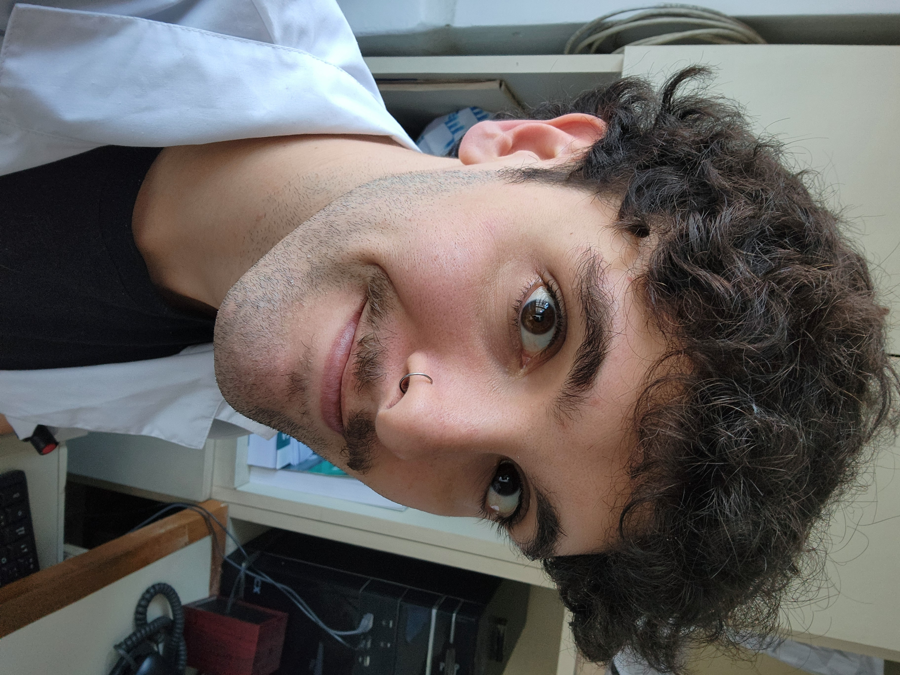

Lautaro Ruiz Carpintero

Summary 🍀
I am a 27 years old physician from Argentina. I was born in Chubut, a
southern province of the country, and I currently live in Cordoba.
Recently I have been focusing on web development, and I am excited to
apply my skills in this field.
I am a passionate web developer with a focus on creating dynamic and
responsive web applications, thinking outside the box and letting my
creative mind flow freely. I have experience in HTML, CSS, and JavaScript,
and I am always eager to learn new technologies.
Currently I'm looking for opportunities to apply my skills in a professional
environment and contribute to exciting projects. I am particularly interested
in roles that allow me to work on innovative web applications and collaborate
with other developers.
Education 📚
-
Medical Degree - Universidad Nacional de Cordoba, Argentina (2017)
-
Medical residency in Ophtalmology (incomplete) - Clinica Maldonado Bas de Cordoba, Argentina (2025)
-
RCP and ATLS courses - Hospital Nacional de Clinicas, Cordoba (2020)
-
Web Development Bootcamp - The Complete Full-Stack Web Development Bootcamp (2025)
-
Beginner chef degree - Instituto Mariano Moreno, Cordoba (2023)
Work Experience 💼
-
Medical Intern - Hospital Nacional de Clinicas; Hospital de Maternidad Nacional; Hospital San Roque.
(2017-2024)
- Assisted in patient care and collaborated with various healthcare teams
- Conducted patient examinations, assisted in surgeries, and provided post-operative care.
-
On Call Doctor/Emergency department - Hospital municipal de Villa del Dique y Hopital municipal de Embalse. (2024-2025)
- Provided emergency medical care, managed patient cases, and coordinated with medical staff.
- Assisted in triage, diagnosis, and treatment of patients in emergency situations.
-
Customer Service - Tinta Amarilla (library)
(2015-2016)
- Provided customer service, managed inventory, and assisted in daily operations.
- Engaged with customers to understand their needs and provide appropriate solutions.
Skills 🔥
- HTML, CSS, JavaScript
- Responsive Web Design
- Problem Solving
- Team Collaboration
- Attention to Detail
- Creativity and innovation
- Adaptability and willingness to learn
Other